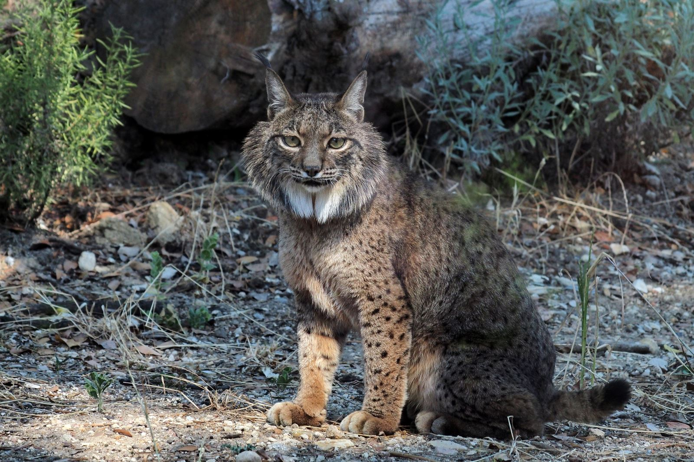

O Lince Ibérico (Lynx pardinus) é a espécie de felino mais ameaçada do Mundo, estando numa situação crítica a nível mundial.
Durante o século XX a distribuição desta espécie sofreu um acentuado declínio que teve como consequência a redução e o desaparecimento de algumas das suas populações, ficando estas cada vez mais dispersas e afastadas. Este declínio deveu-se sobretudo a dois factores: a regressão da sua principal presa, o coelho, como resultado de doenças virais (mixomatose, febre hemorrágica), abandono das práticas agrícolas tradicionais e algumas práticas cinegéticas desadequadas; e a perda e deterioração do seu habitat, os matagais e bosques Mediterrânicos, nomeadamente devido à sua substituição por plantações de espécies florestais exóticas e/ou de crescimento rápido (ex. eucalipto, pinheiro-bravo), à construção de grandes infra-estruturas (ex. barragens, estradas) e aos recorrentes incêndios florestais. Outros factores como a morte não natrural (ex. atropelamentos, furtivismo), doenças (ex. tuberculose bovina) e perturbação nas áreas de reprodução representam sérios desafios à actual sobrevivência da espécie.
Este conjunto de ameaças levou a que, segundo as investigações mais recentes, actualmente a população total de lince-ibérico esteja reduzida a cerca de 200 indivíduos adultos, conhecendo-se actualmente apenas duas populações reprodutoras em Espanha, ambas na Andaluzia, nas regiões da Serra Morena Oriental e de Doñana. Em Portugal, apesar de actualmente não serem conhecidas populações reprodutoras da espécie, ocorrem registos esporádicos, alguns dos quais de animais provenientes de populações espanholas à procura de novos territórios. Foi o caso do último registo, obtido em 2010 (passados 9 anos do anterior registo) na região de Moura / Barrancos, uma das áreas de intervenção do Programa Lince.
O lince-ibérico é uma espécie emblemática, que já foi alvo de campanhas para reconhecimento da situação da espécie em Portugal (ex. Campanha LPN/ICN "Salvemos o Lince e a Serra da Malcata"- primeira campanha de sensibilização sobre o lince-ibérico). Trata-se do único grande mamífero carnívoro endémico da Península Ibérica e o mais ameaçado da Europa. Só uma intervenção urgente poderá travar o seu processo de extinção e evitar o primeiro desaparecimento de um felino na Europa nos últimos 2000 anos.
A LPN e a Lisboa Editora produziram, em 2010, o vídeo "O Lince-Ibérico". Este vídeo sobre um dos felinos mais ameaçados do mundo, pretende sensibilizar a população em geral e em particular a escolar para as particularidades do lince-ibérico, os riscos a que está sujeito e as medidas que estão a ser realizadas para a sua recuperação.